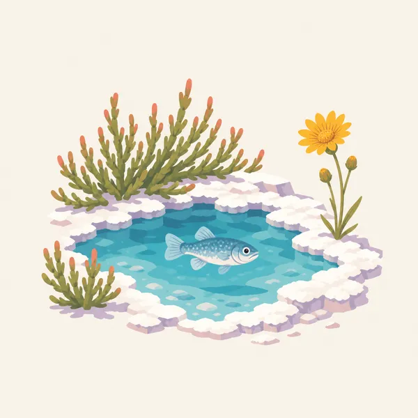
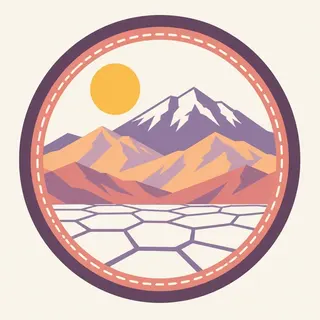

01
Badwater Basin
The salt polygons and the below-sea-level marker. NPS places it at −282 feet. The walk onto the salt is hot, bright, and shorter than it looks. Turn around before the glare becomes the story.
TrailMark Archive Edition
California | Nevada
Salt polygons in the foreground, dunes, and a snow-capable mountain wall behind the lowest basin in North America.
Archive No. TM-DEVA-014
National Park since 1994
Collection Desert Parks
Park Overview
The National Park Service describes Badwater Basin at 282 feet below sea level, the lowest point in North America, with the Panamint Mountains rising more than 11,000 feet above it. The park also calls this basin the hottest place in the world.
The name is severe and the inventory is not: colorful badlands, snow-covered peaks, sand dunes, rugged canyons, and more than 1,000 described plant species, from ancient bristlecone pines to short-lived spring flowers.
The park spans California and Nevada. Devil's Hole, the Racetrack, and the dune fields are different chapters. None of them is the whole place. Check NPS before you travel. Distances inside the park are not what a small map suggests.
Emotional Thesis
At Badwater the salt looks like a finished surface and the mountains look painted on. Walk onto the polygons and the surface is a crust over mud, and the mountains are a vertical mile of real rock.
Death Valley is extreme, and it is also specific: pupfish in a limestone shelf, dunes that move, rocks that slide on a playa when ice and wind agree. The gloom in the name is not the content.
Landscape Highlights
01
The salt polygons and the below-sea-level marker. NPS places it at −282 feet. The walk onto the salt is hot, bright, and shorter than it looks. Turn around before the glare becomes the story.
02
Mesquite Flat and other dune fields are wind-sorted sand against the mountains. Tracks are temporary. The plants at the edge are not a path.
03
NPS notes snow-capped Panamint peaks more than 11,000 feet above Badwater. Telescope Peak is the high point of that wall. From the basin it is the reason the valley exists: mountains rose, the valley dropped.
Wildlife
NPS is clear that many animals live here. Most of them avoid the hour when visitors stand at Badwater.

01
Desert bighorn use the mountain slopes. Seeing one across a canyon is the right distance.
02
Pupfish persist in isolated warm waters, including Devil's Hole. They are a conservation story measured in a single pool.
03
Sidewinders, roadrunners, and ravens are the midday cast. The mammals are mostly a dawn and night animal. Do not leave water bowls. Wild animals do not need a tap.
Geology
Death Valley is a tectonic basin: extension of the crust dropped the floor and lifted the ranges. The salt, the badlands, and the dunes are what climate did afterward.
01
Badwater's salt is a lake that evaporated, over and over. The polygons are the crust cracking as it dries.
02
The Panamints and the valley floor together make one of the great vertical reliefs in the country. NPS states that relief directly.
03
Mars-like badlands such as Zabriskie Point are soft sediments carved fast. Stay on the trail. The folds are fragile and the drops are real.
The humane season on the valley floor. Peaks may be snowy while Badwater is merely cool. This is when the park is a pleasure instead of a test.
If winter rain was generous, flowers appear and then leave. They are not guaranteed. The dunes and the basin do not need them.
NPS calls this the hottest place in the world. The valley floor in summer is a danger, not a backdrop. If you go, treat midday outside a car as a mistake.
Heat loosens its grip later here than in the high plateaus. Check the forecast, not the calendar, before you walk the salt.
Photography
Death Valley scale is the relation between the white floor and the wall behind it.
01
Get low so the salt pattern leads to the Panamints. Standing straight up, the floor becomes a blank.
02
Summer air shimmers the mountains apart. That can be the picture. It can also mean you should be in the car.
03
Shoot the contact between dune and desert pavement. The middle of a dune field, without a plant or a ridge, goes abstract too fast.
Field Notes
The valley looks empty only if you refuse the pupfish, the salt, and the mountain that makes the emptiness possible.
TrailMark Field Notes

Badge Story
The badge needs salt, a dune or a mountain, and a color that is not the red of the Utah parks. This desert is paler and more severe.
The low point is the idea, even if the circle cannot show −282 feet.
Snow on a peak behind salt is the relief NPS describes.
Do not make it another red-rock icon. The floor is white.
Archive No.014
LocationBadwater Basin
ReleaseBasin Mark
Stewardship / Safety
Death Valley kills people who underestimate summer and distance. NPS is the source for forecasts and road closures. A clear sky is not a safety plan.
In hot months, do not walk the basin or the dunes in the middle of the day. Stay with the car and the water.
Carry more water than the walk seems to need, and tell someone your route when you leave pavement.
Do not drive off road. Desert pavement and dune plants do not recover on a vacation schedule.
Devil's Hole and other sensitive waters are closed to play. The pupfish have nowhere else.
Current conditions, fees, and alerts are on the National Park Service site.
Continue the Archive
Joshua Tree is the boulder-and-yucca park to the south. Grand Canyon is the plateau story east of here, already in the archive.